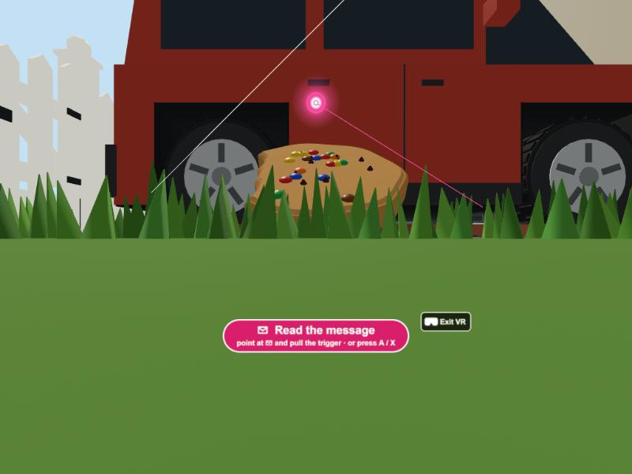
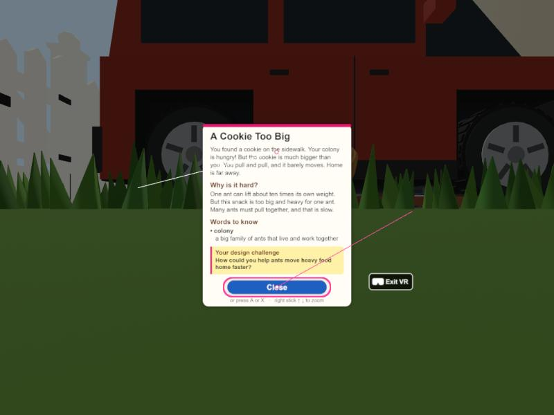
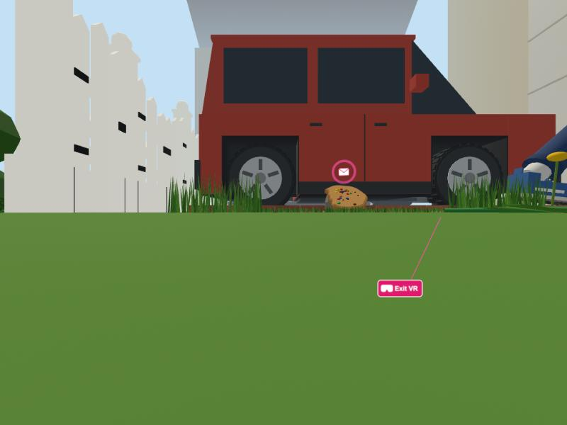

Quest 고칠 점 결과: 선 + 방아쇠 · 카드 줌 · 좌우 30° 돌기(깜빡) · 안에서 Exit VR · 속도 70% (컴퓨터에서 헤드셋 모드를 흉내 내 찍은 실제 화면)

① 장소 가까이: 선이 나옴 — 오른손 선이 분홍 고리에 닿아 분홍색으로 바뀌고 고리가 빛남 → 방아쇠 = 카드 열기. 왼손 선(흰색)은 아무것도 안 가리킴. 안내판: point at ✉ and pull the trigger · or press A / X

② 카드: 1.6 m에서 열림, 줌 가능 — 선이 Close에 닿으면 분홍 테두리 → 방아쇠 = 닫기. 오른쪽 조이스틱 ↑ 가까이 / ↓ 멀리 (0.8 ~ 3 m). 카드 아래: or press A or X · right stick ↑ ↓ to zoom

③ Exit VR (오른쪽 아래) — 선이 닿으면 분홍으로 바뀌고 방아쇠 = 헤드셋 모드 끝. 장소에서 멀 때는 선이 안 보이다가 Exit VR을 가리킬 때만 나타남
컴퓨터에서 확인한 것 (흉내 입력)
· 방아쇠: 고리 → 카드 열림, Close → 닫힘, 빈 곳(카드 글 위) → 아무 일 없음. A/X로 열고 닫기도 그대로
· 줌: 위로 밀면 1.6 → 0.8 m(가장 가까이), 아래로 밀면 3.0 m(가장 멀리)에서 멈춤. 카드가 열려 있으면 걷지 않음
· 돌기: 오른쪽으로 밀면 오른쪽 30°, 왼쪽은 왼쪽 30°. 계속 밀고 있어도 한 번만 돎(가운데로 돌아왔다가 다시 밀어야 또 돎). 돌 때 약 0.2초 어두워졌다 밝아짐. 서 있는 자리는 그대로
· 걷기: 왼쪽 조이스틱만. 같은 입력에서 키보드 속도의 0.69배(약 45 m/s). 오른쪽 조이스틱 위·아래로는 안 걸어짐
· 나가면 선·버튼·고리 빛이 모두 사라지고 컴퓨터 화면(키보드 357.5, Enter/Esc 카드)은 그대로 · 아직 못 한 것: 실제 Quest (선 방향이 손과 맞는지, 방아쇠 느낌, Exit VR이 시야 안에 잘 보이는지, 깜빡임이 편한지)